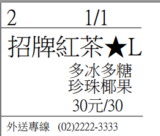
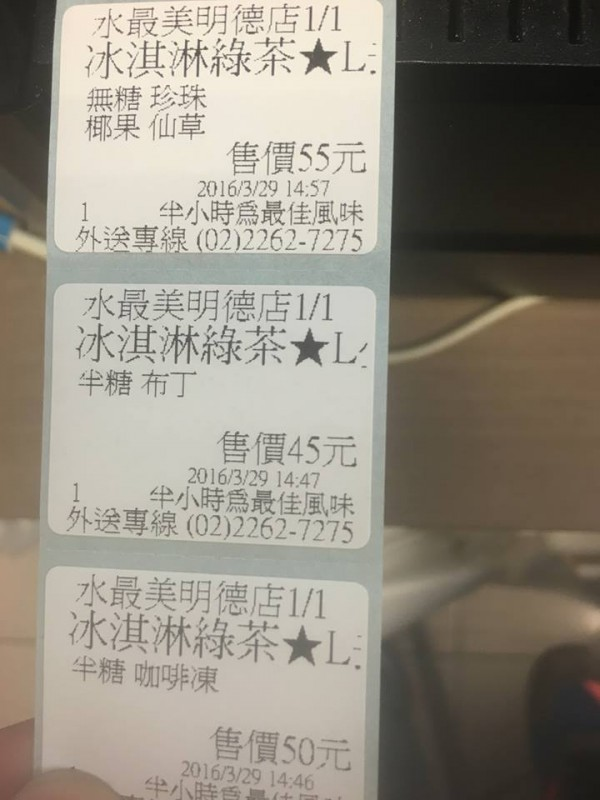

您好
如要清楚定位每個標籤備註的位置,那必須清楚定義每個備註編號
菜單範例
{主選單}
好茶香
好茶香
招牌紅茶[$20][標籤][標籤內用不印]
[備註1]★L[$5][顏色:16763904]
烏龍綠茶[$15][標籤][標籤內用不印]
[備註1]★L[$5][顏色:16763904]
[備註2]多冰[$0]; 少冰[$0];去冰[$0];常溫[$0];溫[$0];熱[$0];
翠玉綠茶[$15][標籤][標籤內用不印]
[備註1]★L[$5][顏色:16763904]
[備註2]多冰[$0]; 少冰[$0];去冰[$0];常溫[$0];溫[$0];熱[$0];
[備註3]多糖[$0]; 少糖[$0];半糖[$0];微糖[$0];無糖[$0];
[備註4]珍珠[$0];珍珠[$5];
[備註5]椰果[$5]
[備註6]仙草[$5];
[備註7]布丁[$5];
[備註8]咖啡凍[$10];
[備註9]冰淇淋[$15];
{備註}
[備註2]多冰[$0]; 少冰[$0];去冰[$0];常溫[$0];溫[$0];熱[$0];
[備註3]多糖[$0][顏色:16763904]; 少糖[$0][顏色:16763904];半糖[$0][顏色:16763904];微糖[$0][顏色:16763904];無糖[$0][顏色:16763904];
[備註4]珍珠[$0];珍珠[$5];
[備註5]椰果[$5][顏色:52479];
[備註6]仙草[$5][顏色:10066227]
[備註7]布丁[$5][顏色:6723891]
[備註8]咖啡凍[$10][顏色:13408767];
[備註9]冰淇淋[$15][顏色:16751052];
3@
16@ [流水號] [項次]/[總數量]
4@-----------------------------------------------------------------------------
1@
18@ [品項][備註一]
3@
12@ [備註二][備註三]
12@ [備註四][備註五][備註六][備註七][備註八][備註九]
2@
12@ [單價]元/[總價]
2@
4@-----------------------------------------------------------------------------
8@ 外送專線 (02)2222-3333

